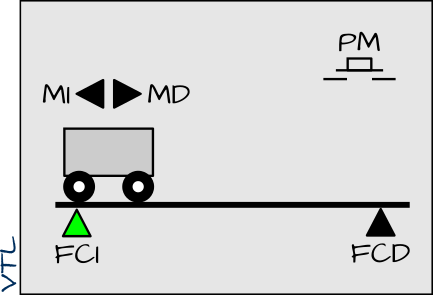
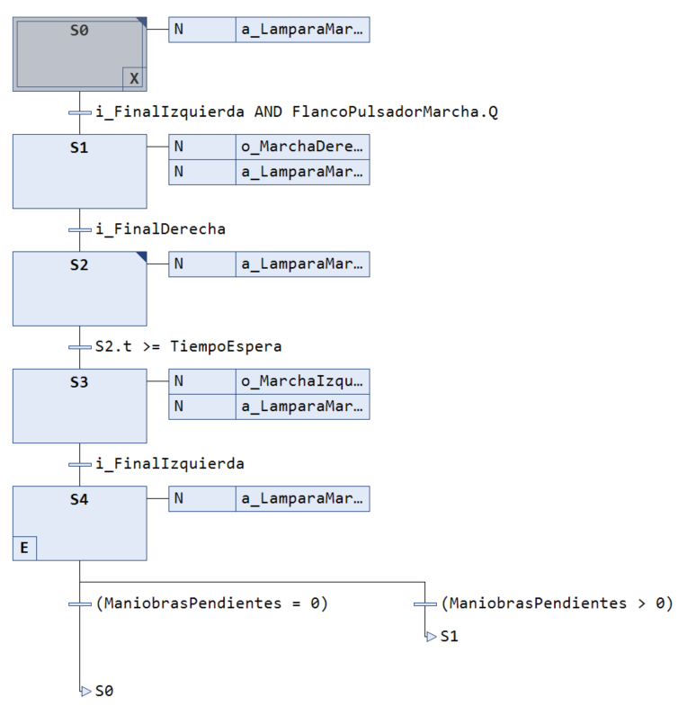
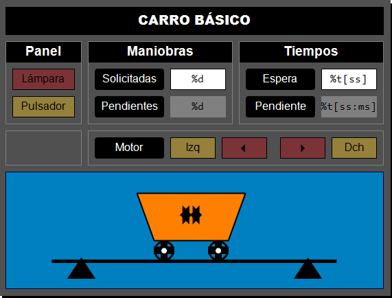

🚃 Carro básico (TwinCAT 3)¶
📝 Descripción del Proyecto¶
El carro va y viene es un móvil que se desplaza longitudinalmente entre los extremos izquierdo y derecho de un tramo de vía.

Elementos constituyentes¶
La parte operativa del carro básico está constituida por los siguiente dispositivos:
- Un motor con dos señales de mando (izquierda y derecha)
- Un par de sensores finales de carrera (izquierdo y derecho)
La parte de relación consiste en un panel de operador básico compuesto únicamente por:
- Un pulsador de marcha.
- Una lámpara de marcha.
Descripción del proceso¶
El funcionamiento del carro básico es como sigue.
- El carro se pone en marcha hacia la derecha cuando se acciona el pulsador de marcha.
- Cuando el carro alcanza el final de carrera derecha invierte el sentido de la marcha.
-
El carro se deteine al alcanzar, de nuevo, el final de carrera izquierda (posición inicial).
-
Condición inicial: carro detenido sobre el final de carrera izquierda.
Modalidades¶
- Carro pulsado. El carro inicia un viaje de ida y vuelta, únicamente, cuando estando en su posición inicial se acciona el pulsador de marcha.
- Carro temporizado. El carro se detiene durante un determinado tiempo sobre el final de carrera derecha antes de iniciar el camino de regreso hacia su posición inicial.
- Carro limitado. El carro realiza un determinado número de viajes de ida y vuelta (tarea) cada vez que, estando en su posición inicial, se acciona el pulsador de marcha.
- Carro señalizado. La lámpara de marcha se enciende de forma permanente para indicar que el carro está en funcionamiento y parpadea para indicar que el carro está en reposo.
Entradas y salidas¶
| Nombre | Tipo | Origen | Descripción |
|---|---|---|---|
PM |
BOOL |
Input | Pulsador de Marcha |
FCI |
BOOL |
Input | Final de Carrera Izquierda |
FCD |
BOOL |
Input | Final de Carrera Derecha |
LM |
BOOL |
Output | Lampara de Marcha |
MI |
BOOL |
Output | Marcha Izquierda |
MD |
BOOL |
Output | Marcha Derecha |
Especificación funcional¶
Las siguientes especificaciones funcionales describen el comportamiento del carro (lógica de control) de una manera precisa utilizando los diagramas de relés y contactos y el lenguaje GRAFCET.
Código¶
Implementa el funcionamiento básico de este "famoso" problema de automatización del carro va y viene en sus diferentes modalidades (básico, pulsado, temporizado, limitado y señalizado).
Una de las característica más relevante de este proyecto didáctico es que se muestran diferentes formas de especificar e implementer un problema simple de automatización, empleando el lenguaje de especificación GRAFCET y usando diferentes lenguajes de programación de la norma IEC 61131-3 (SFC y ST).
- GRF → [SFC / ST]
💻 Requisitos del Sistema¶
Software¶
- IDE: Microsoft Visual Studio / TwinCAT 3 XAE (Versión mínima recomendada: 3.1.4024.x).
- Lenguajes: Texto Estructurado (ST) y Diagrama de Funciones Secuenciales (SFC).
🔨 Replicar el proyecto¶
Información inicial¶
Importante
El proyecto completo que se explica aquí se corresponde con la versión señalizada del carro va y viene:
- El carro inicia un viaje de ida y vuelta, únicamente, cuando estando en su posición inicial se acciona el pulsador de marcha (se utiliza la detección del flanco de subida).
- El carro se detiene durante un determinado tiempo sobre el final de carrera derecha antes de iniciar el camino de regreso hacia su posición inicial.
- Este proceso de ida y vuelta se realiza un determinado número de veces (configurable en la visualización) con una sola acción del pulsador de marcha.
- La lámpara de marcha se enciende de forma permanente para indicar que el carro está en funcionamiento y parpadea para indicar que el carro está en reposo.
Para replicar la creación de la solución completa, seguir este procedimiento:
Sugerencia
Pulsa en ➡️ para obtener más información sobre cómo realizar el paso especificado.
- Crear una solución de TwinCAT3 con nombre
tc3_carro_basico➡️ - Crear un proyecto PLC con nombre
carro_basico_PLC➡️ - Escoger un lenguaje para la implementación: ST o SFC.
Versión en ST¶
Información
En esta versión conoceremos cómo implementar una máquina de estados en lenguaje ST.
Para ello, vamos a necesitar una variable específica que guarde el valor actual del estado: Estado, que
será de tipo ENUM y podrá tomar los siguientes valores:
E_Reposo, E_MarchandoDerecha, E_EsperandoDerecha, E_MarchandoIzquierda, E_EvaluandoTarea.
Nótese que estos estados se corresponden con los que tenemos especificados en el GRAFCET del carro señalizado.
- Crear un bloque funcional con nombre
FB_Carro_ST➡️ -
Declarar las variables dentro del FB ➡️
- Entrada (se puede especificar su valor en la llamada al FB)
VAR_INPUT ManiobrasSolicitadas : UINT := 2; TiempoEspera : TIME := T#2S; END_VARVariable Tipo E/S Descripción ManiobrasSolicitadas UINT no Nº de ciclos "va-y-viene" solicitadas para ejecutar. TiempoEspera TIME no Tiempo de espera en lado derecho. - Salida (se puede utilizar su valor fuera del FB)
VAR_OUTPUT ManiobrasPendientes : UINT; TiempoPendiente : TIME; END_VARVariable Tipo E/S Descripción ManiobrasPendientes UINT no Nº de ciclos que quedan por realizar TiempoPendiente TIME no Tiempo restante de la espera/temporización - Locales (de uso interno al FB)
VAR // Enumeracion de etiquetas para los estados Estado : (E_Reposo, E_MarchandoDerecha, E_EsperandoDerecha, E_MarchandoIzquierda, E_EvaluandoTarea); // Utilidades BLK : FB_Blink; FlancoPulsadorMarcha : R_TRIG; TemporizadorEspera : TON; // Entradas i_FinalDerecha AT %I* : BOOL; i_FinalIzquierda AT %I* : BOOL := TRUE; i_PulsadorMarcha AT %I* : BOOL; // Salidas o_LamparaMarcha AT %Q* : BOOL; o_MarchaDerecha AT %Q* : BOOL; o_MarchaIzquierda AT %Q* : BOOL; END_VARVariable Tipo E/S Descripción Estado ENUM no Estado actual de la máquina de estados del carro BLK FB_Blink no Bloque auxiliar para hacer parpadear una señal (p.ej. lámpara) FlancoPulsadorMarcha R_TRIG no Detector de flanco ascendente del pulsador de marcha TemporizadorEspera TON no Temporizador de retardo para gestionar la espera i_FinalDerecha BOOL E Final de carrera derecha (entrada digital) i_FinalIzquierda BOOL E Final de carrera izquierda (entrada digital) i_PulsadorMarcha BOOL E Pulsador de inicio/marcha del ciclo o_LamparaMarcha BOOL S Lámpara indicadora de marcha/funcionamiento o_MarchaDerecha BOOL S Orden de movimiento hacia la derecha (salida digital) o_MarchaIzquierda BOOL S Orden de movimiento hacia la izquierda (salida digital) -
Escribir el código
El código va a estar formado por tres regiones que se implementan todas en la caja de código: una para la llamada a las utilidades, otra para la función de estado y otra para la función de salida.
-
Llamada a los FBs de utilidades:
// --- UTILIDADES --- BLK(); FlancoPulsadorMarcha(CLK := i_PulsadorMarcha); TemporizadorEspera(IN := (Estado = E_EsperandoDerecha), PT := TiempoEspera);- Genera la señal de parpadeo con
BLK. - Monitoriza el flanco de subida de
i_PulsadorMarcha - Activa un temporizador de
TiempoEsperacuando el estadoE_EsperandoDerechaesté activo.
- Genera la señal de parpadeo con
-
Especificación de la función de estado que implementa la evolución de la secuencia:
// --- FUNCION DE ESTADO --- CASE Estado OF E_Reposo: IF i_FinalIzquierda AND FlancoPulsadorMarcha.Q THEN // Accion a la salida IF ManiobrasPendientes = 0 THEN ManiobrasPendientes := ManiobrasSolicitadas; END_IF; Estado := E_MarchandoDerecha; END_IF; E_MarchandoDerecha: IF i_FinalDerecha THEN Estado := E_EsperandoDerecha; END_IF; E_EsperandoDerecha: // Accion principal TiempoPendiente := TiempoEspera - TemporizadorEspera.ET; IF TemporizadorEspera.Q THEN Estado := E_MarchandoIzquierda; END_IF; E_MarchandoIzquierda: IF i_FinalIzquierda THEN // Accion a la entrada (siguiente estacion) IF ManiobrasPendientes > 0 THEN ManiobrasPendientes := ManiobrasPendientes - 1; END_IF; Estado := E_EvaluandoTarea; END_IF; E_EvaluandoTarea: IF ManiobrasPendientes = 0 THEN Estado := E_Reposo; ELSIF ManiobrasPendientes > 0 THEN Estado := E_MarchandoDerecha; END_IF; END_CASE;- En reposo: Pasa a
E_MarchandoDerechasii_FinalIzquierdaestá activo y se detecta el flanco dei_PulsadorMarcha. Antes de salir de este estado, inicializa el contadorManiobrasPendientesaManiobrasSolicitadas. - Marchando hacia la derecha: Pasa a
E_EsperandoDerechacuando se active el sensor fin de carrera a la derechai_FinalDerecha. - Esperando en la derecha: Calcula el tiempo restante del temporizador y lo asigna a
TiempoRestante. Cuando el temporizador termine, pasa aE_MarchandoIzquierda. - Marchando hacia la izquierda: Monitoriza el valor del sensor fin de carrera izquierdo
i_FinalIzquierda. Cuando se active, decrementa el contador de maniobras pendientes y pasa al estado de evaluación de la tarea. - Evaluando la tarea: Determina si el contador de maniobras pendientes ha llegado a cero, en cuyo caso volvemos a reposo. En caso contrario, repite el proceso "va-y-viene" pasando a
E_MarchandoDerecha.
- En reposo: Pasa a
-
Especificación de la función de salida que activa las salidas del sistema según el estado activo:
// --- FUNCION DE SALIDA --- o_LamparaMarcha := ((Estado = E_Reposo) AND BLK.Q) OR (Estado <> E_Reposo); o_MarchaDerecha := (Estado = E_MarchandoDerecha); o_MarchaIzquierda := (Estado = E_MarchandoIzquierda);-
Enciende la lámpara (
o_LamparaMarcha) intermitentemente en el estado de reposo y fija en cualquier otro caso.Información
Nótese que
((Estado = E_Reposo) AND BLK.Q)genera una señal que conmuta intermitentemente cuando el estado de reposo esté activo. -
Activa la salida digital que propicia el movimiento del motor hacia la derecha
o_MarchaDerechaen el estado de marcha hacia la derecha. - Activa la salida digital que propicia el movimiento del motor hacia la izquierda
o_MarchaIzquierdaen el estado de marcha hacia la izquierda.
-
-
Versión en SFC¶
Información
En esta versión conoceremos cómo implementar una máquina de estados en lenguaje gráfico SFC.
Este lenguaje es muy útil para implementar máquinas de estados de manera sencilla ya que su codificación explicita directamente la secuencia de estados y sus transiciones.
Nótese la gran similitud entre la especificación en GRAFCET y la implementación en SFC.
- Crear un bloque funcional con nombre
FB_Carro_SFC➡️ -
Declarar las variables dentro del FB ➡️
Información
Las variables para la versión SFC son las mismas que en la versión ST con dos excepciones:
- No necesitamos una variable de estado, ya que viene implícito en el lenguaje. Además, TwinCAT 3 asocia una variable booleana a cada estado que indica si éste está activo:
[nombre_etapa].x. - No necesitamos el temporizador ya que TwinCAT 3 incorpora un temporizador asociado a cada etapa, al que se puede acceder mediante el código
[nombre_etapa].t.
- No necesitamos una variable de estado, ya que viene implícito en el lenguaje. Además, TwinCAT 3 asocia una variable booleana a cada estado que indica si éste está activo:
-
Implementamos el código en SFC ➡️

Explicación del código (revisar los tipos de acciones ➡️):
-
Etapa
S0. Se realizan tres acciones asociadas:- Acción continua
a_LamparaMarcha: Hace que parpadee cuandoS0esté activo (S0.x = TRUE) y quede fija en cualquier otra etapa.
BLK(); o_LamparaMarcha := (S0.x AND BLK.Q) OR NOT S0.x;- Acción principal
a_FlancoMarcha: Realiza la llamada al FB de detección de flanco de subida del pulsador de marcha. Es en este estado donde queremos que se monitorice este flanco.
FlancoPulsadorMarcha(CLK := i_PulsadorMarcha);- Acción memorizada a la salida
a_ManiobrasPendientes_Iniciar: Antes de pasar a la siguiente etapa, inicializamos el valor de la variableManiobrasPendientesal valor solicitado enManiobrasSolicitadas.
IF ManiobrasPendientes = 0 THEN ManiobrasPendientes := ManiobrasSolicitadas; END_IF - Acción continua
- Transición
S0→S1: Cuando esté activo el sensor fin de carrera izquierdo y se produzca el flanco de subida del pulsador de marcha.
- Etapa
S1. Se realizan dos acciones asociadas:- Acción continua que activa la salida digital correspondiente al movimiento del motor hacia la derecha:
o_MarchaDerecha. - Acción continua
a_LamparaMarcha.
- Acción continua que activa la salida digital correspondiente al movimiento del motor hacia la derecha:
- Transición
S1→S2: Cuando esté activo el sensor fin de carrera derecho.
-
Etapa
S2. Se realizan dos acciones asociadas:- Acción continua
a_LamparaMarcha. - Acción principal
a_TiempoEspera: Calcula el tiempo que queda por esperar en la posición derecha.
TiempoPendiente := TiempoEspera - S2.t;Información
Nótese el uso de la expresión
S2.t, donde se va almacenando, de forma automática por TwinCAT 3, el tiempo que la etapaS2está activa. - Acción continua
- Transición
S2→S3: Cuando el tiempo que la etapaS2está activa iguale o supere al tiempo de espera:S2.t >= TiempoEspera
- Etapa
S3. Se realizan dos acciones asociadas:- Acción continua que activa la salida digital correspondiente al movimiento del motor hacia la izquierda:
o_MarchaIzquierda. - Acción continua
a_LamparaMarcha.
- Acción continua que activa la salida digital correspondiente al movimiento del motor hacia la izquierda:
- Transición
S3→S4: Cuando esté activo el sensor fin de carrera izquierdo.
-
Etapa
S4. Se realizan dos acciones asociadas:- Acción continua
a_LamparaMarcha. - Acción memorizada a la entrada
a_ManiobrasPendientes_Iniciar. Justo al entrar en esta etapa, se decrementa el valor de lasManiobrasPendientes.
IF ManiobrasPendientes > 0 THEN ManiobrasPendientes := ManiobrasPendientes - 1; END_IF - Acción continua
- Bifurcación condicional
- Transición
S4→S0: Si el número de maniobras pendientes ha llegado a cero, volvemos a la etapa inicial. - Transición
S4→S1: Si el número de maniobras pendientes aún no ha llegado a cero, repetimos el proceso.
- Transición
-
-
Diseñar la visualización añadiendo: ➡️

- Rectángulos (Rectangle) para las etiqueta Panel, Maniobras, Tiempos, etc.
-
Rectángulos (Rectangle) editables para introducir el valor de
ManiobrasSolicitadasyTiempoEspera.Parámetros
- Texts > Text =
- [%d] Formato estilo printf que indica que se va a sustituir por un número entero
- [%t] Formato estilo printf que indica que se va a sustituir por una variable tipo
TIME
- Text variables > Text variable =
- [
MAIN.Carro.ManiobrasSolicitadas] - [
MAIN.Carro.TiempoEspera]
- [
- Inputconfiguration
- OnMouseClick > Configure > Write a Variable.
- Aceptar cuadro de diálogo por defecto. El valor introducido se escribirá en la variable especificada en Text Variable.
- OnMouseClick > Configure > Write a Variable.
- Texts > Text =
-
Rectángulos (Rectangle) no editables para mostrar el valor de
ManiobrasPendientesyTiempoRestante.Parámetros
- Texts > Text =
- [%d] Formato estilo printf que indica que se va a sustituir por un número entero
- [%t] Formato estilo printf que indica que se va a sustituir por una variable tipo
TIME
- Text variables > Text variable =
- [
MAIN.Carro.ManiobrasPendientes] - [
MAIN.Carro.TiempoRestante]
- [
- Texts > Text =
-
Rectángulos (Rectangle) para las variables booleanas correspondientes a la lámpara, pulsador, sensores final de carrera y activación de motores. Tanto para mostrar su valor como para poder modificarlo.
Parámetros
- Texts > Text = [Pulsador], [Lampara], , etc.
- Color variables > Toggle color = [
MAIN.i_PulsadorMarcha], [MAIN.o_Lampara], etc. - InputConfiguration
- Toggle > Variable: [
MAIN.i_PulsadorMarcha], [MAIN.o_Lampara], etc.
- Toggle > Variable: [
-
Declarar la variable
Carrode tipoFB_Carro_SFCoFB_Carro_STen el programaMAIN, según la versión a utilizar.PROGRAM MAIN VAR Carro: FB_Carro_SFC; // o Carro: FB_Carro_ST; END_VAR -
Escribir, en la zona de implementación de
MAIN, la llamada al FB delCarro.Carro();
🚀 Descargar el ejemplo¶
Lenguaje
Se proporciona con implementaciones equivalentes en ST y en SFC.
Para descargar, compilar y ejecutar este proyecto en el entorno de TwinCAT 3, seguir una de estas dos opciones:
- Mediante el Campus Virtual
- Mediante GIT
Mediante el Campus Virtual¶
- Copiar a tu equipo local el fichero
CV > Automatización > ejemplos > 2_tc3_carro_basico > tc3_carro_basico.tnzipque hay en la carpeta del campus virtual. - Seguir el procedimiento descrito aquí para generar la Solución a partir del fichero.
Mediante GIT¶
- Clonar el Repositorio:
git clone https://github.com/vetorres-uma/TC3_Carro_Basico.git
- Abrir el Proyecto: abra el archivo
.sln(Solución) ubicado en la carpeta principal utilizando el entorno de ingeniería TwinCAT XAE (integrado en Visual Studio). - Selección del Controlador: seleccione el simulador (UmRT_Default) o controlador local o remoto (Choose Runtime System).
- Activación de Configuración: en el modo Configuración, active la configuración (Activate Configuration)) y reinicie TwinCAT en modo Ejecución (Run Mode).
- Carga del Código: en el entorno PLC, inicie la sesión y descargue el programa al PLC (Login).
- Poner el código en ejecución: ejecute la lógica de control en el controlador (Start). Puede utilizar la visualización integrada en el proyecto PLC para facilitar la prueba.
🤝 Contribuciones¶
Este proyecto es utilizado con fines educativos. Las contribuciones, sugerencias o correcciones de errores son bienvenidas. Por favor, abra un Issue o envíe un Pull Request si desea contribuir.
🧑 Autor¶
- Autor Principal: Victor Torres (@vetorres-uma)
- Revisor: Francisco Ángel Moreno (@famoreno)
⚖️ Licencia¶
Este proyecto es de código abierto y está disponible bajo la Licencia Pública General GNU (GPL).
- Consulte el archivo
LICENSE.mdpara más detalles.